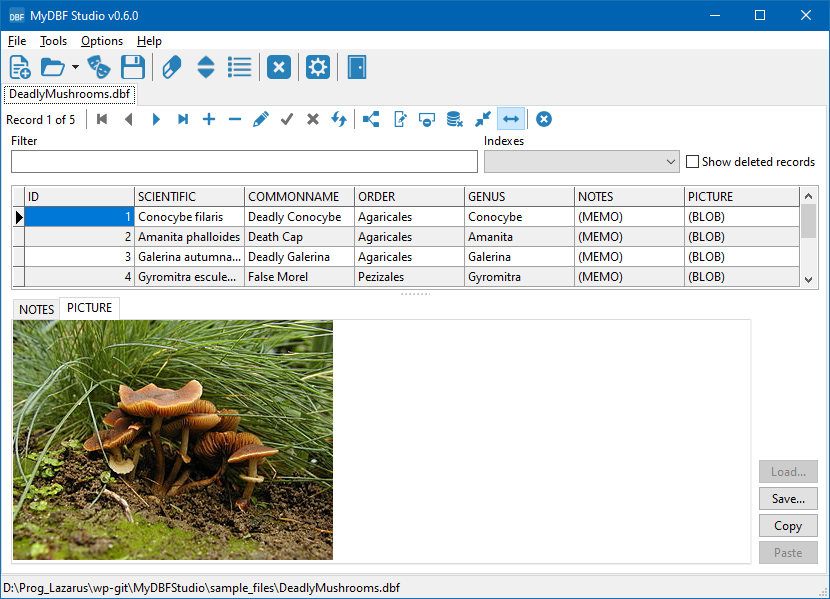
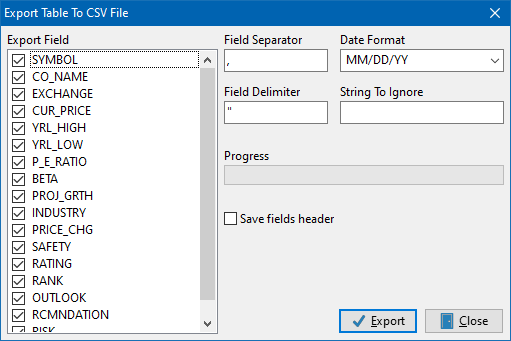
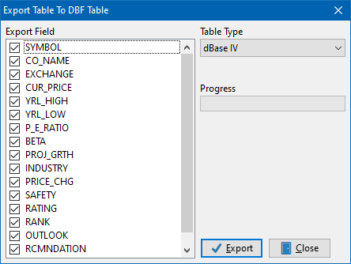
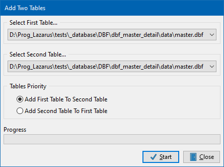

Manage your tables anywhere...

| MyDbf Studio Manage your tables anywhere...
|
|
| MyDbf Studio User Guide Introduction
After starting the program, you can see the main window with the menu bar and the toolbar. In the menu bar you can view the items used to manage your tables, while in the toolbar there are four buttons for basic operations (Open table, New table, Empty tables, Add two tables and Subtract two tables). I want to clarify that my natural language is Italian, so excuse me for mistakes in this manual and correct me if you want too. To create a new table On toolbar click the 'New' button  or go to "File->New...". In the window that
appears you can insert directly
in the grid the field name, field type and length (if
requested). You can also
choose the type of table. The types of tables supported are:
or go to "File->New...". In the window that
appears you can insert directly
in the grid the field name, field type and length (if
requested). You can also
choose the type of table. The types of tables supported are:
Furthermore
you can define indexes for the table by
clicking the
button "Define Index". In the new window you can select the
field or insert an expression between fields
(like Field1 + Field2) and
you can also set the options for the index (Primary, Unique,
Descending or Case Insensitive). Finally you should enter
a name for the index and
confirm by clicking the "Ok" button. To
save the new table, just click on the "Ok" button and
select the path and then name of the file.
To open an existing table(s) On toolbar click the 'Open' button  or
go to "File->Open...". Browse the system until find the
file you want to open
and
select it. You can
also select multiple files to open. or
go to "File->Open...". Browse the system until find the
file you want to open
and
select it. You can
also select multiple files to open.To open an existing table(s) by alias On the toolbar, click the 'Open by alias' button  or
go to "File->Open by Alias".
You can use internal alias to open the file in any position on your
hard disk. This function speed up the search of a table in your
archives. To define a new alias just click on the "Add Alias" button
and insert a name for the alias and the path where the tables are.
Click on the alias on the "MyDbf Studio Alias"'s grid to show the
relative tables. You can select one or more tables to open. or
go to "File->Open by Alias".
You can use internal alias to open the file in any position on your
hard disk. This function speed up the search of a table in your
archives. To define a new alias just click on the "Add Alias" button
and insert a name for the alias and the path where the tables are.
Click on the alias on the "MyDbf Studio Alias"'s grid to show the
relative tables. You can select one or more tables to open.
To rename a table If after opening a table you need to save it under a different name, you can use the Save As command in item "File" of the menu bar. This command shall also export index files. To close a table To close a table simply click on the button "x" of the window go to "File->Close". To close all open tables To close all open tables simply go to "File->Close All". Working with a table After you have successfully opened a table, you encounter this:  As you can see, everything you need to manipulate your table is in this window. The second group of buttons, from left, is used to navigate between records, to insert, delete, edit... The first group of buttons invokes special functions like:
The combobox contains the list of indexes on the table, you just click on it to select one. By selecting "Show Deleted" you can activate, or not, the visualization of deleted records. To export the table in other formats MyDbf Studio allows you to export data displayed in a table in different formats, currently are supported:
To export table in Comma Separated Value (.CSV) With an active table selected, click on "Tools->Export->To CSV File", the following window will appear on video  As you can see, you can check which fields to export. Also you can specify the separator between the data, the date format, the field delimiter and a possible string to be ignored. The values set as shown in the image generate a file type "FIELD1","FIELD2"... Click the OK button and must choose the location where to save the file. To export table in HTML file With an active table selected, click on "Tools->Export->To HTML File", the following window will appear on video In this window you can set the look of the table that will be generated in HTML format. In the "Page Title" you can specify the title of the html page, the default is the dbase file name. Also in this export can select fields to export. Click the OK button and must choose the location where to save the file. To export table in XLS file With an active table selected, click on "Tools->Export->To XLS File", the following window will appear on video  In this window you can set the parameters necessary to create the .xls file for Excel©. "Format Number" shows how the integer value will be displayed. "Format Number Width Decimals" indicates the number of decimal of a floating point number and the decimal separator. The "Mask" fields show how the numbers are grouped to indicate tens, hundreds, thousands, etc. In "Date Format" is possible define the date format you prefer. Also in this export can select fields to export. Click the OK button and must choose the location where to save the file. To export table in DBF file With an active table selected, click on "Tools->Export->To DBF File", the following window will appear on video  This feature allows you to export a table to another table but you can choose which fields you need in the new file. You can also specify a different type of table. Warning! The indexes are not exported. Click the OK button and must choose the location where to save the file. To export table in XML file With an active table selected, click on "Tools->Export->To XML File", the following window will appear on video  This function creates a file in XML format that represents the records displayed on screen. The file can be viewed with any web browser and can be used to send data between remote computers. Click the OK button and must choose the location where to save the file. To export table in SQL script With an active table selected, click on "Tools->Export->To SQL Script", the following window will appear on video  This function creates a script file in SQL language that allow you to create the table in SQL database and to insert the records displayed on screen. You can chose to generate only the SCREATE TABLE script or the script with INSERT INTO command, or naturally both file. Click the OK button and must choose the location where to save the file(s). To add two tables This function works on two equals tables and allows you to add records from the first table to the second, or vice versa. First you need to open the two tables, then go on "Tools->Add Two Tables"; this window will appear:  Just select the first and the second table from tables used in the program and decide the priority of the operation. After click OK to start the operation. To substract two tables This function always works on two equals tables and allows you to remove similar records from two tables. First you need to open the two tables, then go on "Tools->Substract Two Tables"; this window will appear:  Just select the first and the second table from tables used in the program and decide the priority of the operation. After click OK to start the operation. To directly empty one or more tables If you want to delete all records in one or more tables without opening files, you can use the function located in "Tools->Empty tables...": simply select the tables you want to empty and click on Open. To sort a table on fields This function sort a table's records on fields defined by user, with an active table selected, click on "Tools->Sort Table", the following window will appear on video  Just select the sort type (ascending or descending order) and the field(s) you want to use for sorting records and click on OK button. ATTENTION: On tables with many records this function is very slow! |
|
 © 2010-2017 by Calogiuri Enzo Antonio |

 Empty table, delete all record in the table.
Empty table, delete all record in the table.
 Delete only visible records.
Delete only visible records.
 Restructure allows you to change the table structure or indexes.
Restructure allows you to change the table structure or indexes.
 Set field value allows you to set a value for a table record. Can either be a fixed value or the result of a mathematical operation between two fields (+,-,*,/).
Set field value allows you to set a value for a table record. Can either be a fixed value or the result of a mathematical operation between two fields (+,-,*,/).{kind=link}